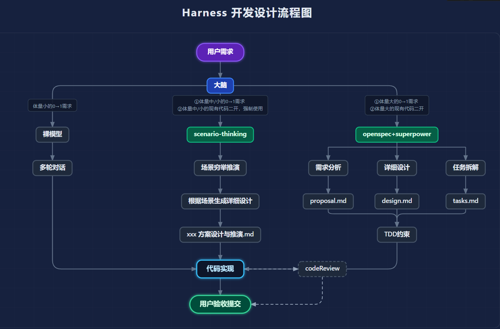
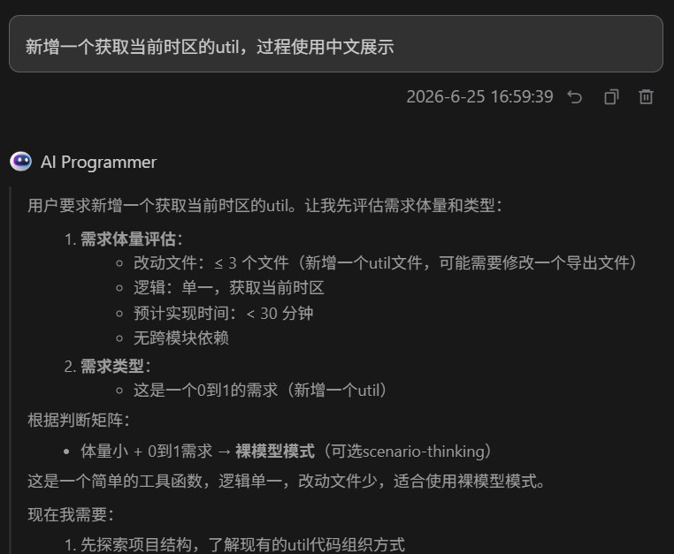
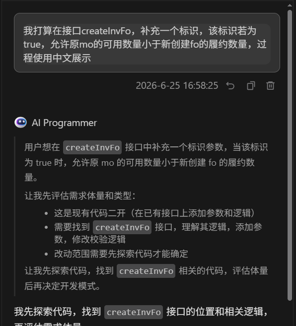
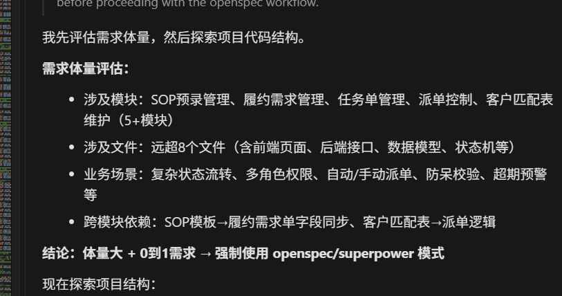

前两篇文章分别讲了两件事。
第一篇是 OpenSpec 和 Superpowers 怎么配合：当需求比较大时，先用 OpenSpec 生成设计、任务和规范，再用 Superpowers 约束设计验证、TDD、实现和代码审查。
第二篇是 scenario-thinking 怎么用于二次开发：当需求没有大到需要完整流程，但业务边界又不能靠 AI 自己猜时，先做场景穷举和数值推演，再按推演文档实现。
这篇可以看作前两篇的总结：我们不应该只问“用哪个模型”，而应该先问“这个需求该走哪种开发模式”。
这就是 Harness 的位置。
Harness 不是一个具体工具
Harness 直译有“马具、缰绳”的意思。放到 AI 编码里，它不是某一个固定插件，也不是某一个模型能力，而是一类工程化约束手段。
我更愿意这样理解它：
1 | 模型负责生成能力； |
用户给 AI 的原始输入通常很短，比如“帮我改一下这个接口”“新增一个工具类”“按需求文档完成这个功能”。这类输入对人来说可以继续追问，对模型来说却很容易变成发散空间。
Harness 要做的事情，就是把模糊目标变成明确过程：
- 先判断需求体量；
- 再判断是全新需求还是现有代码二开；
- 然后选择裸模型、scenario-thinking 或 OpenSpec/Superpowers；
- 最后把 AI 约束在选定模式里完成交付。
所以 Harness 的价值，不是让模型突然“变聪明”，而是减少模型需要临场猜测的部分。
为什么它能缩小模型差距
不同模型之间的差距，很多时候不是体现在“会不会写一个 if”，而是体现在更前面的判断上：
1 | 能不能从模糊需求里推断真实意图； |
如果用户只说“我要吃饭”，中间有太多信息需要补：什么时候、在哪、和谁、预算多少、忌口是什么。模型越强，越可能补得合理；模型弱一点，就更容易发散。
但如果输入变成：
1 | 今晚 7 点，两个人，在公司食堂二楼吃饭，预算 50 元以内，不吃辣。 |
模型之间的差距就会缩小。因为很多需要推断的东西，已经被外部过程补足了。
AI 编码也是一样。Harness 的本质是把“请你猜”改成“按这个流程判断、按这个文档实现、按这些场景验证”。
它主要降低三类风险：
- 意图推断风险：通过需求体量和类型判断，减少模型自己猜模式；
- 推理发散风险：通过场景推演、设计文档和任务清单，把推理步骤外化；
- 实现越界风险：通过模式隔离和完成标准，限制 AI 随意扩展范围。
三条开发路线
Harness 的核心，是把需求分到三条路线里。

第一条是裸模型模式。
它适合非常小的 0 到 1 需求：新增一个工具函数、补一个简单转换方法、写一个不涉及复杂业务分支的小能力。这类需求如果也强行走完整设计流程，反而会把简单事情做重。
第二条是 scenario-thinking 模式。
它适合中小体量需求，尤其适合现有代码二开。原因很简单：二开最怕误伤旧逻辑。看起来只是新增一个标识、放开一个校验，背后可能会影响 null、false、旧调用方、特殊类型、混合明细、多轮调用等一串场景。
第三条是 OpenSpec/Superpowers 模式。
它适合大体量需求：改动跨多个模块，涉及多条主流程和异常流，需要明确设计、任务、测试约束和代码审查。这时完整流程虽然重，但它能把风险压住。
可以粗略记成：
1 | 小而新的需求：裸模型 |
先判断体量，再判断类型
Harness 的第一步不是调用 Skill，而是做模式选择。
需求体量可以按四个维度判断：
| 维度 | 小 | 中 | 大 |
|---|---|---|---|
| 改动文件数 | 3 个以内 | 3 到 8 个 | 超过 8 个 |
| 业务场景 | 单一无分支 | 2 到 5 个场景 | 多条主流程和异常流 |
| 模块依赖 | 基本无跨模块 | 1 到 2 个模块 | 跨多个模块或服务 |
| 预估时间 | 30 分钟以内 | 30 分钟到 2 小时 | 超过 2 小时 |
这里有一个保守原则：
1 | 拿不准，就往大评。 |
这不是为了显得流程严谨，而是因为低估需求体量的代价很高。一个实际需要设计和测试约束的需求，如果误判成“随手一改”，后面通常会付出更多返工成本。
判断完体量，还要判断需求类型：
1 | 0 到 1 需求：现有代码里没有对应实现，是新增能力。 |
二者最大的区别是：0 到 1 更关注“怎么建”，二开更关注“旧行为不能坏”。
模式选择矩阵
把体量和类型合起来，可以得到一个简单矩阵：
| 需求类型 | 体量小 | 体量中 | 体量大 |
|---|---|---|---|
| 0 到 1 需求 | 裸模型，可选 scenario-thinking | 推荐 scenario-thinking | 强制 OpenSpec/Superpowers |
| 现有代码二开 | 强制 scenario-thinking | 强制 scenario-thinking | 强制 OpenSpec/Superpowers |
这个矩阵是前两篇文章的真正合流点。
scenario-thinking 不是只给中型需求用的。只要是现有代码二开，即使体量看起来小，也建议先推演。因为二开不是看“改几行代码”，而是看“有没有旧行为兼容风险”。
OpenSpec/Superpowers 也不是所有需求都要用。它适合大需求，但不适合每个小工具函数。流程是用来降风险的，不是用来制造仪式感的。
小需求：可以让模型直接做
比如新增一个获取当前时区的工具方法，逻辑单一，改动文件少，也没有复杂业务分支。

这类需求可以直接进入裸模型模式：
1 | 理解需求 |
但裸模型模式也不是“完全放飞”。它仍然有边界：
- 不做无关重构；
- 不扩展需求外功能；
- 实现中发现复杂度上升，要暂停并重新评估模式；
- 能跑验证就跑验证。
裸模型适合的是“清楚、短、小”的任务，不适合“看起来短，但业务含义复杂”的任务。
二开需求：优先 scenario-thinking
如果需求是“在已有接口上补一个标识”“放开某个校验”“调整已有数量计算”，就不要急着写代码。

这类需求最容易出现的问题是：AI 只实现了新场景，却破坏了旧场景。
所以 Harness 会把它导向 scenario-thinking：
1 | /thinking |
这里最关键的是兼容性场景。比如新增一个 Boolean 标识时，至少要问清：
1 | 不传字段时是否等同 false？ |
这些问题不问清楚，代码实现很容易看起来正确，实际语义却偏了。
大需求：进入完整流程
如果需求涉及多个模块、多条流程、多个页面或接口，甚至还包含权限、状态机、任务拆解、数据模型等内容，就应该进入 OpenSpec/Superpowers 模式。

这时完整流程的价值会变得明显：
1 | /opsx:propose |
这条路线重，但适合重需求。它把“需求分析、详细设计、任务拆解、测试约束、代码审查”都放进流程里，降低大需求里最常见的两个问题：范围漂移和实现不完整。
模式隔离很重要
Harness 里还有一条容易被忽略的原则：一旦选定模式，就不要随意中途切换。
原因是不同模式的上下文组织方式不同。
裸模型模式没有设计文档；scenario-thinking 有推演文档；OpenSpec/Superpowers 有 proposal、design、tasks、spec 和测试约束。如果中途随意切换，AI 很可能丢失前一个模式里的关键前提。
当然，模式不是永远不能升级。如果执行中发现体量被严重低估，应该暂停，说明原因，再征得用户确认后重新按更重的模式走。
一个比较稳的规则是：
1 | 可以因为风险上升而升级模式； |
Harness 和模型选择的关系
原始材料里花了不少篇幅比较不同模型在三种模式下的表现。博客里我不展开具体评分，因为分数会随模型版本、项目代码、提示词和测试样本变化。
更值得保留的是这个结论：
1 | 模型能力重要，但流程约束同样重要。 |
当输入很模糊、流程很松散时，强模型的优势会很明显，因为它要承担更多隐性推理和补全工作。
但当 Harness 把需求分流、场景推演、设计文档、任务拆解和验证标准都外化以后，成本更友好的模型也能在许多日常开发任务里稳定工作。它未必在所有维度都超过强模型，但足够多的风险已经被流程提前吸收。
这也是 Harness 真正有意义的地方：它不是幻想用流程消灭模型差距，而是把“需要模型自由发挥的部分”尽量压缩到合理范围。
仍然无法完全抹平的差距也要承认：
- 训练数据决定的知识边界；
- 极深推理链上的稳定性；
- 指令遵循和细节把控；
- 对陌生技术栈的真实理解。
所以更合理的目标不是“让所有模型一样强”，而是：
1 | 让日常需求尽量不依赖模型的临场发挥。 |
写成 AI Rules 时要注意什么
如果要把 Harness 落成项目规则，我会保留四类内容。
第一，模式选择标准。收到需求后，先评估体量和类型，再说明为什么选择某个模式。
第二，三条模式的执行流程。裸模型、scenario-thinking、OpenSpec/Superpowers 要有清晰边界。
第三，禁止事项。比如现有代码二开不能直接用裸模型，大需求不能跳过设计，/opsx:apply 不能直接等价于写代码。
第四，异常处理。比如推演覆盖不了场景怎么办，scenario-thinking 过程中发现是大需求怎么办，OpenSpec 设计不完整怎么办。
规则不用写得越长越好。真正重要的是让 AI 在关键分叉点上不乱选。
这个系列最后串起来是什么
到这里，三篇文章其实可以串成一条线。
第一篇解决的是大需求怎么稳：
1 | OpenSpec 负责结构化产物； |
第二篇解决的是二开需求怎么稳：
1 | scenario-thinking 负责把隐性场景推演出来。 |
第三篇解决的是入口怎么选：
1 | Harness 负责根据需求体量和类型，把任务分到合适流程里。 |
如果只看单个工具，很容易陷入“这个 Skill 好不好用”的讨论。放到 Harness 视角下，问题会变成：
1 | 这个需求需要多少约束？ |
这才是 AI 编码真正该工程化的地方。
总结
Harness 可以理解成 AI 编码里的模式选择器。
它不追求所有需求都走最完整的流程，也不放任所有需求都无约束推进。它做的是按风险分层：
1 | 小需求：直接做，但不越界； |
前两篇文章分别讲了其中两条路线，这篇则把它们收束成一个判断框架。
对我来说，Harness 最重要的价值不是省 token，也不是替换强模型，而是让 AI 编码从“模型单点能力”变成“模型 + 流程 + 验证”的组合能力。这样项目越复杂，流程的收益越明显。